University group project / music video
中前りおん–片恋ラプソディMV
This is a music video created as a university group project. The artist 中前りおん created the song, and we developed a music video to accompany it.
I handled the story, animation, and sakuga. The heroine (female character) was created by another member using Clip Studio.
The story is about unrequited love: an alien is sent to Earth on an assassination mission, but falls in love with a human girl, his target. He ends up protecting her from other aliens, but never approaches her due to their differences, and quietly returns to his planet while watching over her.
Key visuals / stills
Main images
Selected frames from the music video, focused on atmosphere, character moments, and action beats.

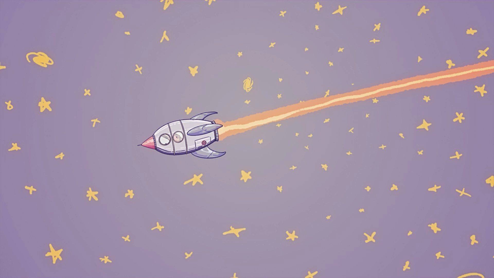
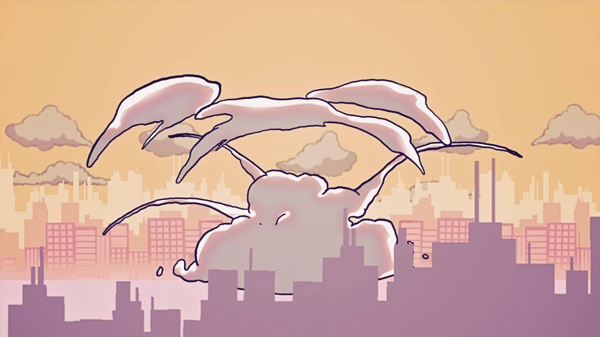
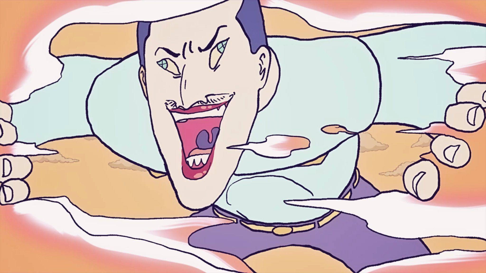
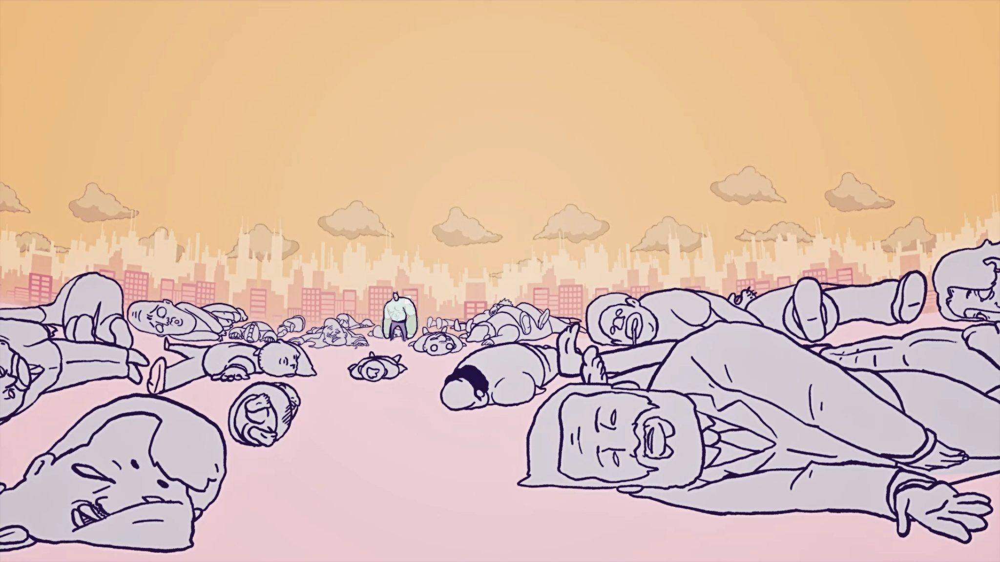
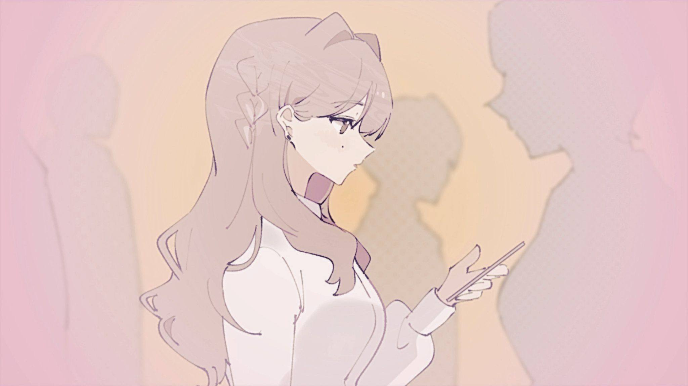
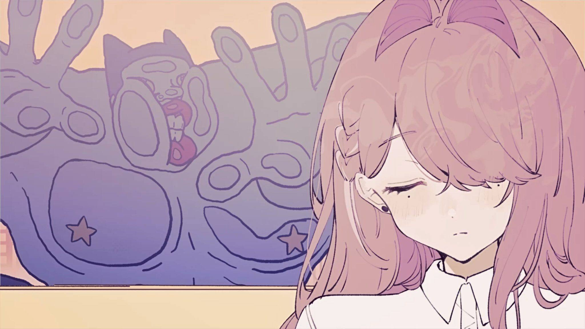
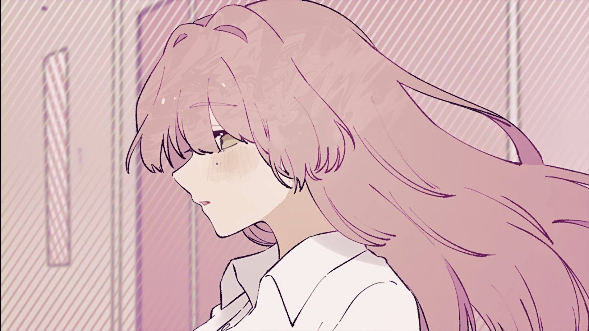
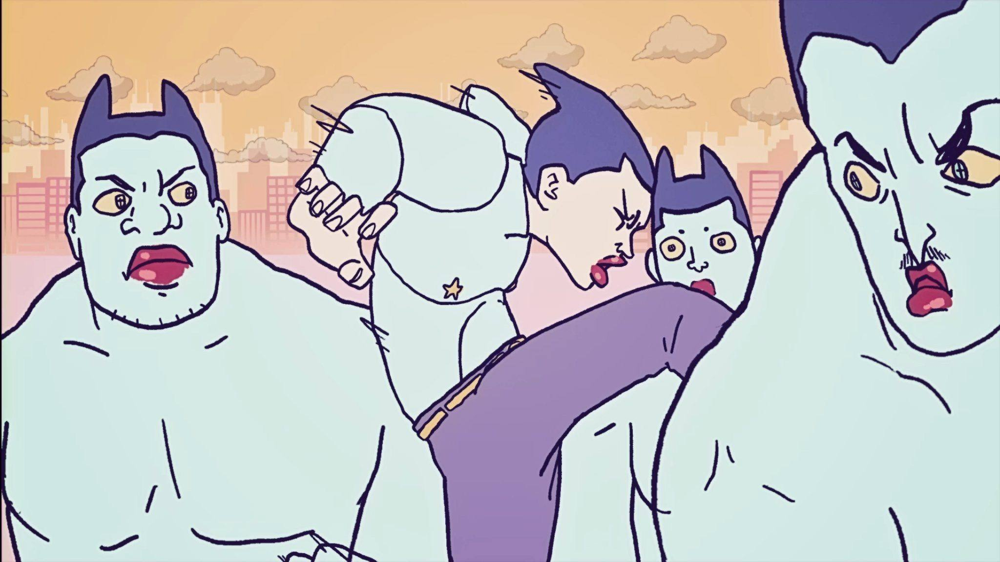
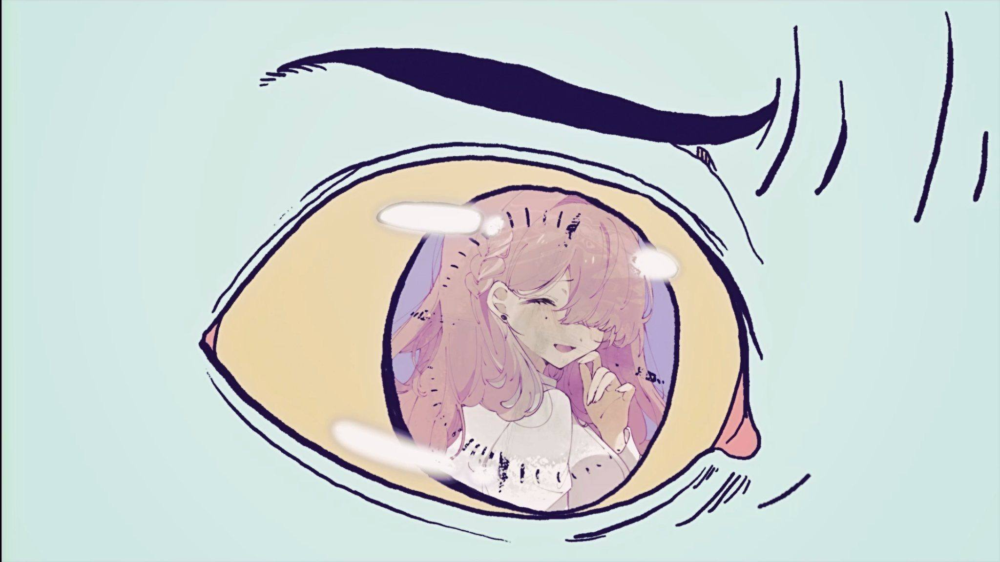
Character design
Design sheets
Three design references used to define the alien lead, enemy variations, and heroine styling.
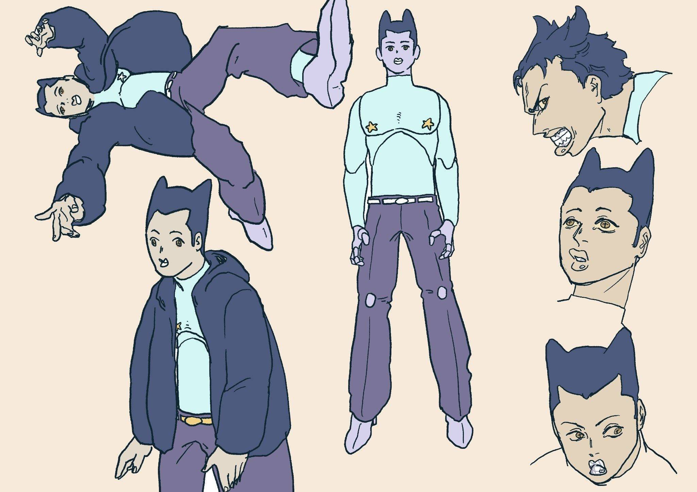
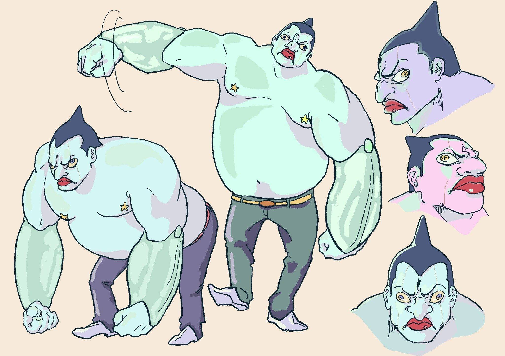
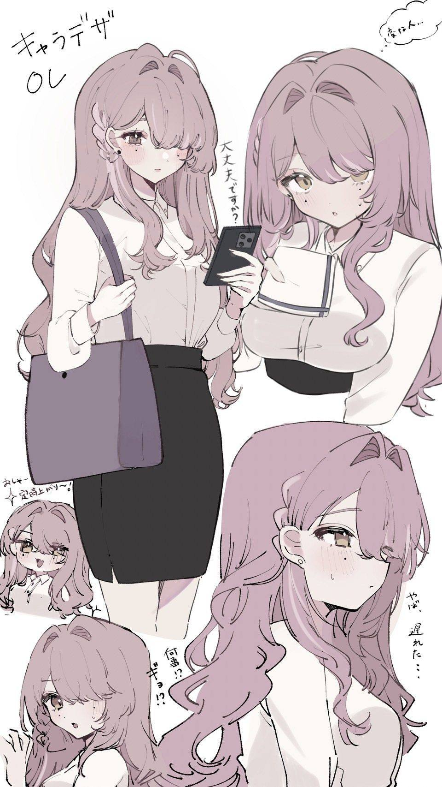
Process / storyboard
Development notes
Key cut planning and handwritten story development used to shape pacing, tone, and the unrequited-love arc.
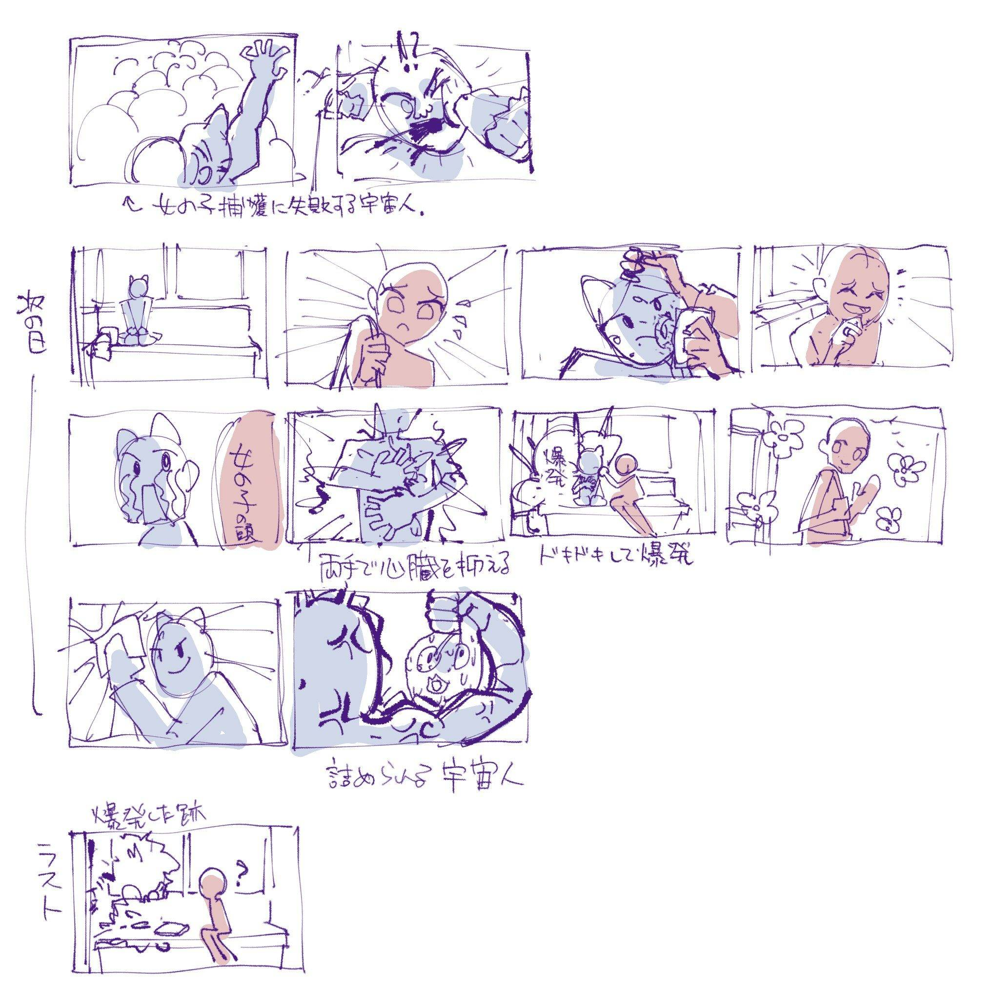
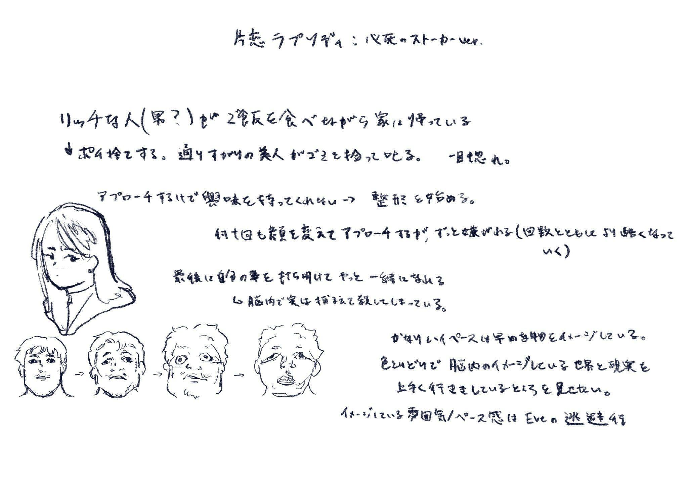